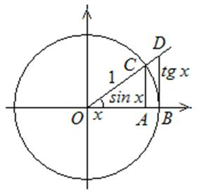

12.2.1. Первый замечательный предел
Функция  при
при
 Первый замечательный
предел
имеет предел, равный 1:
Первый замечательный
предел
имеет предел, равный 1:  .
.
при
Первый замечательный
предел
имеет предел, равный 1: .
Доказательство:
Рассмотрим единичную окружность.
Пусть , , ,
, , . Сравнивая площади треугольника , сектора и
треугольника , получаем
,
.
Разделим двойное неравенство на :
.
Неравенство справедливо и для  ,
так как , .
,
так как , .
,
так как , .
Перейдем к пределу при : .
: . Применяя теорему о пределе промежуточной функции, получаем:
,
то есть
.В первом замечательном пределе имеет место неопределенность  .
.
.Вычислить предел:
Если , то и  и тогда
и тогда
, то и и тогдаВычислить предел:
Первый замечательный
предел